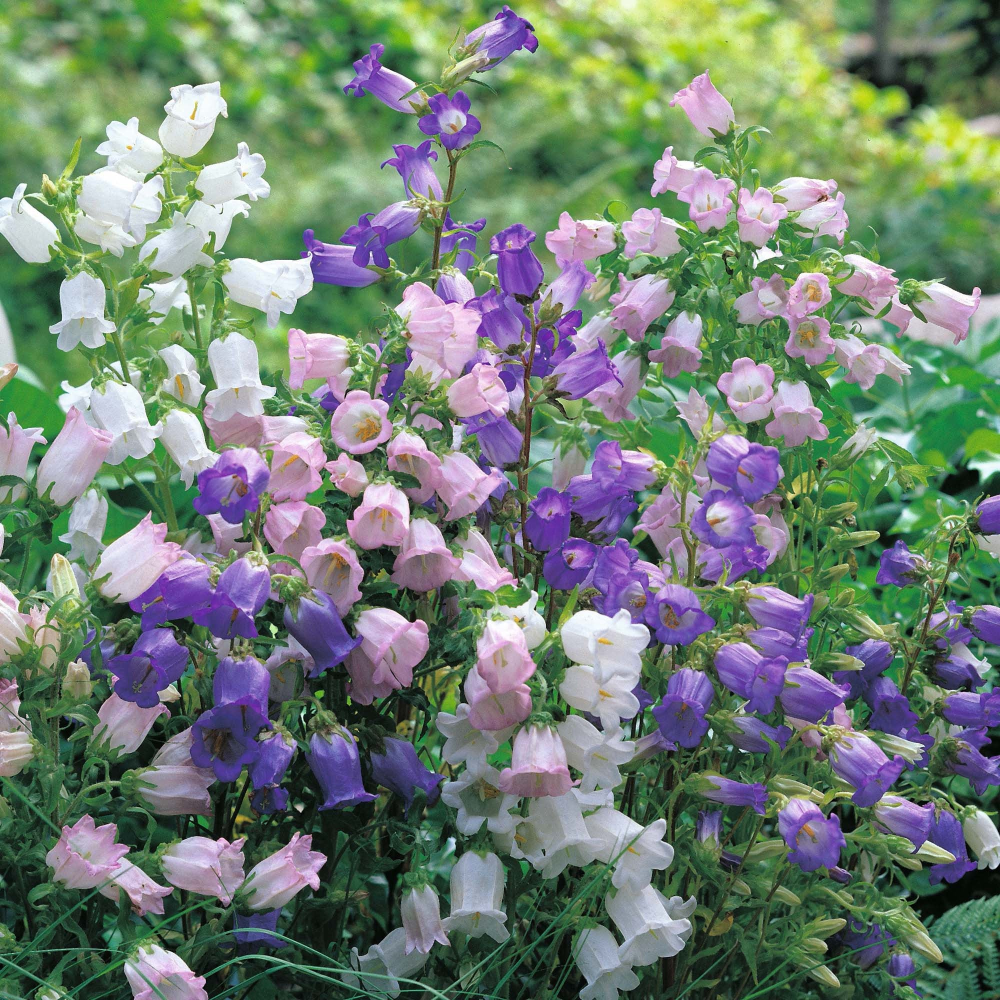

Canterbury Bells
General Information
Canterbury Bells are biennial flowers known for bell-shaped blooms in purple, blue, white, and pink.
Where They Grow
Sun: Full sun or partial shade.
Soil: Moist, fertile, well-drained.
Climate: Cool to temperate areas.
Home Care & Tips
- Water often to keep soil moist.
- Avoid hot climates—provide shade in summer.
- Mulch to help retain moisture.
Recommended Home Locations
- Semi-shaded garden beds.
- Outdoor pots on patios.
- Shaded balconies.
- Not ideal indoors.